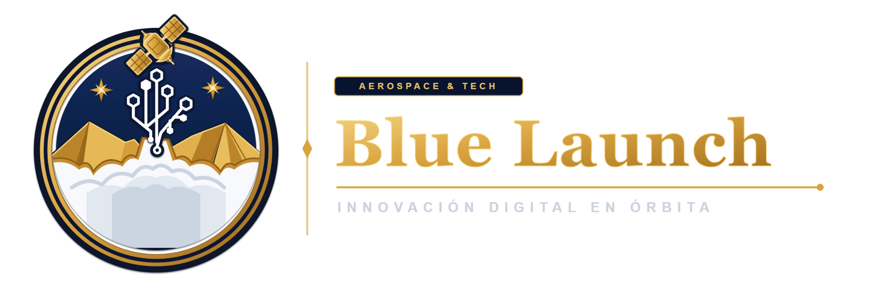
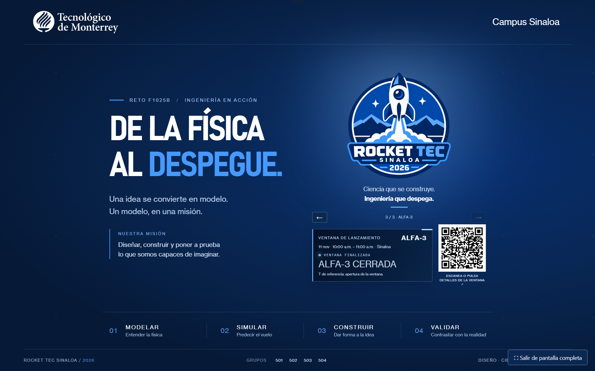
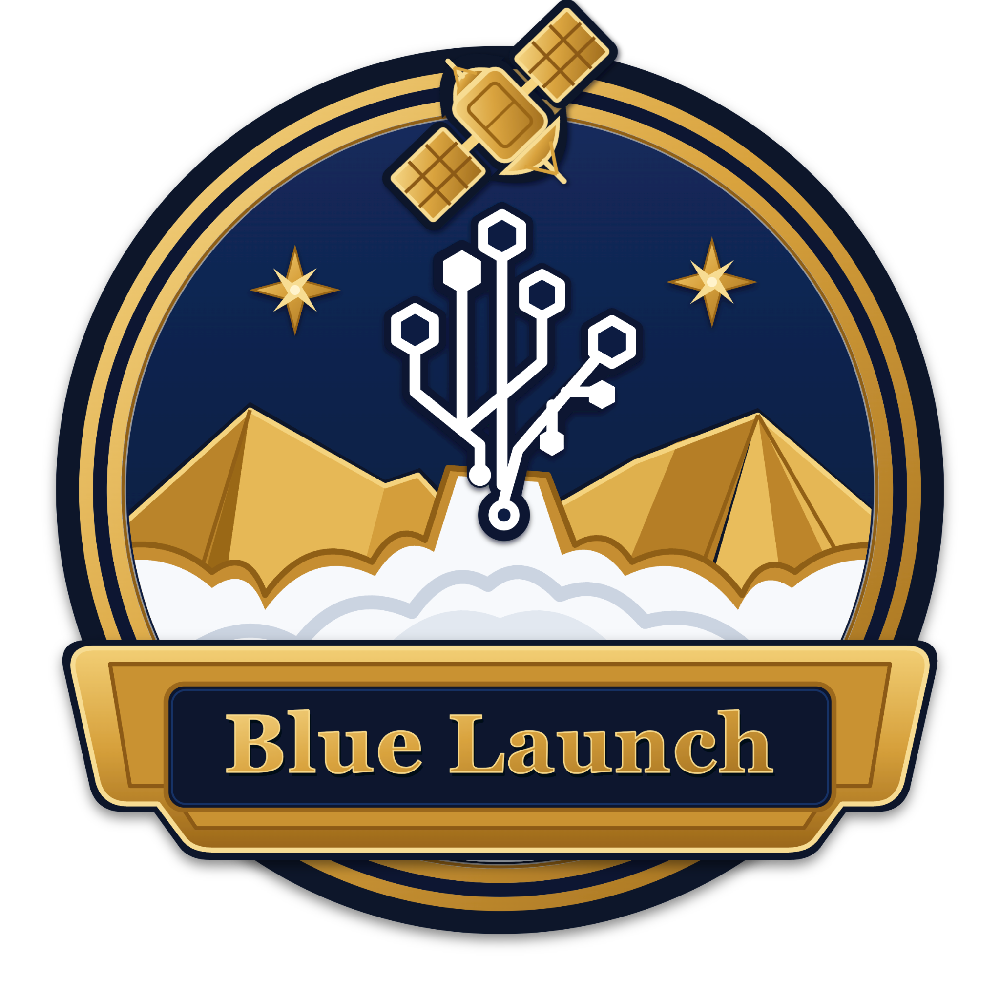
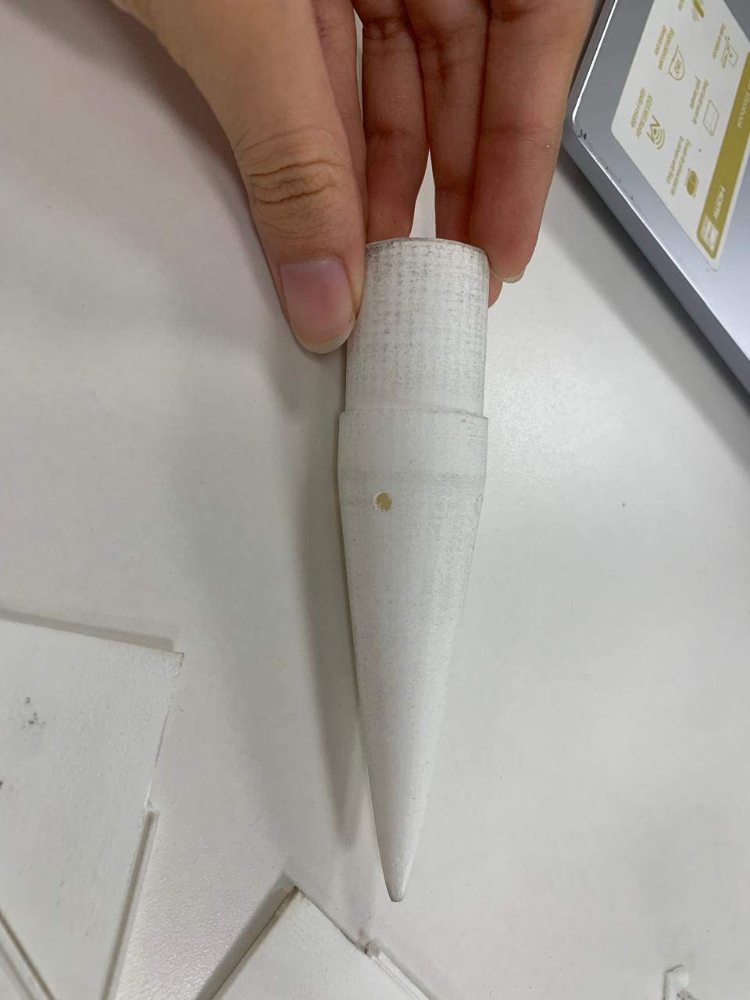
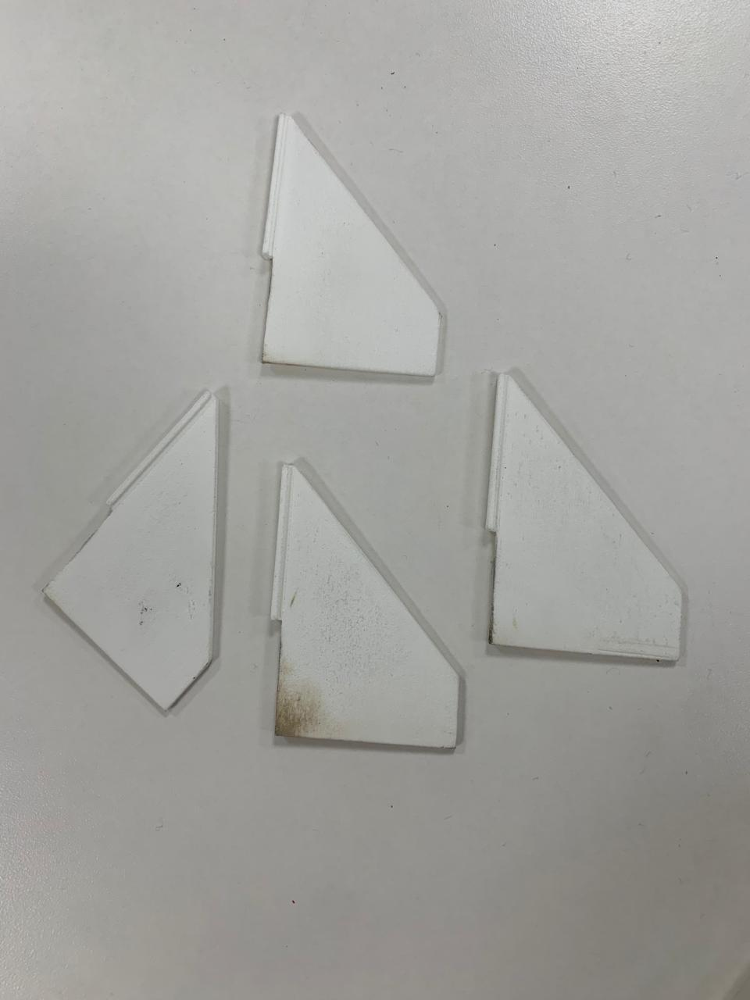
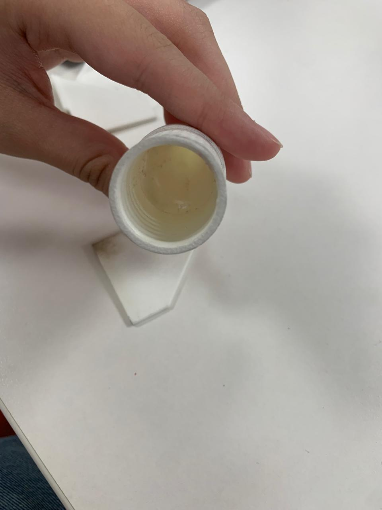

01—04
Aprender del aire
Paracaídas, modelos de descenso y simulación aerodinámica para entender cómo se mueve el aire alrededor del sistema.
● FUNDAMENTOS

Es la pregunta que estamos aprendiendo a responder.
Medusa IV es nuestra apuesta por llevar la curiosidad hasta el cielo. Durante diez semanas, transformamos pruebas, errores y modelos físicos en una predicción de vuelo que pueda enfrentarse con la realidad.
Una misión de ingeniería, diseño y colaboración creada por Blue Launch para el reto de Física F1025B.504.
Cada etapa deja evidencia. Cada medición hace que la siguiente decisión sea mejor.

BANCO DE PRUEBAS · REGISTRO 011Del taller al modelo: documentamos las decisiones, las pruebas y los detalles que hacen que Medusa IV cobre forma.
En Blue Launch, el diseño no decora la ingeniería: la vuelve visible. Las ideas visuales de nuestras diseñadoras gráficas dan identidad a una investigación hecha con método, mediciones y criterio científico.

Diseño, análisis, construcción y comunicación: la misión avanza cuando cada talento encuentra su lugar.



La predicción ya está en marcha. Ahora toca escuchar lo que diga el cielo.